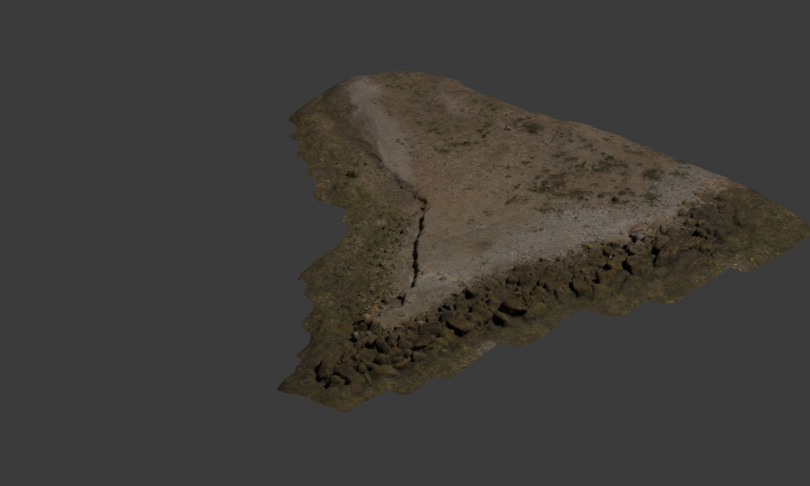

Scene Lab / Blender × Spark
From captured coast
to editable world.
Orbit a real photogrammetry scan. Switch between its textured mesh, sampled Gaussian surface and collision approximation. Then inspect a controlled terrain edit, rendered and reopened in Blender on an NVIDIA L40S.

The display mesh retains the scan’s texture coordinates after decimation. Metres are preserved; the browser uses Y-up coordinates. This is a recorded scene inspection, with no online simulation.
Three representations. Different jobs.
The mesh carries captured appearance. Spark 2.2.0 renders Gaussian samples placed on that mesh. The heightfield is a deliberately separate collision approximation: it cannot reproduce caves, overhangs or missing scan geometry.
Original and edited scenes were rendered with Cycles OptiX, then reopened to check texture packing, bounds, edit settings and all 4,225 collision samples. These checks establish file consistency, not real-world physics accuracy.
Source: Poly Haven’s Coast Rocks 02, by Rob Tuytel and Rico Cilliers, CC0. The original authors are credited in both downloadable variants.
Make a reviewable edit.
Download a bounded edit recipe for the Blender build script. Changing these fields prepares a new recipe; it does not claim to render a new scene in your browser.
blender --background --factory-startup --disable-autoexec \ --python-exit-code 1 --python scripts/build_scene_lab.py -- \ --source checked-source --edit edit.json --output my-scene
The methods include source acquisition, exact package versions and independent readback commands.